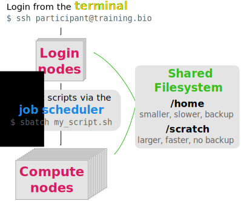

12.1 Introduction to High Performance Computing
Teaching: – min || Exercises: – min
Overview
12.1.1 What is an HPC and what are its uses?
HPC stands for high-performance computing and usually refers to several computers connected together in a network (forming a HPC cluster). Each of these computers is referred to as a node in the network.
The main usage of HPC clusters is to run resource-intensive and/or parallel tasks. For example: running thousands of simulations, each one taking several hours; assembling a genome from sequencing data, which requires computations on large volumes of data in memory. These tasks would be extremely challenging to complete on a regular computer. However, they are just the kind of task that a HPC would excel at.
The terms HPC and cluster are often used interchangeably to mean the same thing.
When working on a HPC it is important to understand what kinds of resources are available to us. These are the main resources we need to consider:
- CPU (central processing units) is the “brain” of the computer, performing a wide range of operations and calculations. CPUs can have several “cores”, which means they can run tasks in parallel, increasing the throughput of calculations per second. A typical personal computer may have a CPU with 4-8 cores. A single compute node on the HPC may have 32-48 cores (and often these are faster than the CPU on our computers).
- RAM (random access memory) is a quick access storage where data is temporarily held while being processed by the CPU. A typical personal computer may have 8-32Gb of RAM. A single compute nodes on a HPC may often have >100Gb RAM.
- GPUs (graphical processing units) are similar to CPUs, but are more specialised in the type of operations they can do. While less flexible than CPUs, each GPU can do thousands of calculations in parallel. This makes them extremely well suited for graphical tasks, but also more generally for matrix computations and so are often used in machine learning applications.
Usually, HPC servers are available to members of large institutions (such as a Universities or research institutes) or sometimes from cloud providers. This means that:
- There are many users, who may simultaneously be using the HPC.
- Each user may want to run several jobs concurrently.
- Often large volumes of data are being processed and there is a need for high-performance storage (allowing fast read-writting of files).
So, at any one time, across all the users, there might be many thousands of processes running on the HPC! There has to be a way to manage all this workload, and this is why HPC clusters are typically organised somewhat differently from what we might be used to when we work on our own computers. Figure 1 shows a schematic of a HPC, and we go into its details in the following sections.

Nodes
There are two types of nodes on a cluster:
- login nodes (also known as head or submit nodes).
- compute nodes (also known as worker nodes).
The login nodes are the computers that the user connects to and from where they interact with the cluster. Depending on the size of the cluster, there is often only one login node, but larger clusters may have several of them. Login nodes are used to interact with the filesystem (move around the directories), download and move files, edit and/or view text files and doing other small routine tasks.
The compute nodes are the machines that will actually do the hard work of running jobs. These are often high-spec computers with many CPUs and high RAM (or powerful GPU cards), suitable for computationally demanding tasks. Often, there are several “flavours” of compute nodes on the same cluster. For example some compute nodes may have fewer CPUs but higher memory (suitable for memory-intensive tasks), while others may have the opposite (suitable for highly-parallelisable tasks).
Users do not have direct access to the compute nodes and instead submitting jobs via a job scheduler.
Job Scheduler
A job scheduler is a software used to submit commands to be run on the compute nodes (orange box in Figure 1). This is needed because there may often be thousands of processes that all the users of the HPC want to run at any one time. The job scheduler’s role is to manage all these jobs, so you don’t have to worry about it.
We will cover the details of how to use a job scheduler in “Using a Job Scheduler”.
For now, it is enough to know that, using the job scheduler, the user can request specific resources to run their job (e.g. number of cores, RAM, how much time we want to reserve the compute node to run our job, etc.). The job scheduler software then takes care of considering all the jobs being submitted by all the users and putting them in a queue until there are compute nodes available to run the job with the requested resources.

In terms of parallelising calculations, there are two ways to think about it, and which one we use depends on the specific application. Some software packages have been developed to internally parallelise their calculations (or you may write your own script that uses a parallel library). These are very commonly used in bioinformatic applications, for example. In this case we may want to submit a single job, requesting several CPU cores for it.
In other cases, we may have a program that does not parallelise its calculations, but we want to run many iterations of it. A typical example is when we want to run simulations: each simulation only uses a single core, but we want to run thousands of them. In this case we would want to submit each simulation as a separate job, but only request a single CPU core for each job.
Finally, we may have a case where both of these are true.
For example, we want to process several data files, where each data file can be processed using tools that parallelise their calculations. In this case we would want to submit several jobs, requesting several CPU cores for each.
Filesystem
The filesystem on a HPC cluster often consists of storage partitions that are shared across all the nodes, including both the login and compute nodes (green box in Figure 1). This means that data can be accessed from all the computers that compose the HPC cluster.
Although the filesystem organisation may differ depending on the institution, typical HPC servers often have two types of storage:
- The user’s home directory (e.g.
/home/user) is the default directory that one lands on when logging in to the HPC. This is often quite small and possibly backed up. The home directory can be used for storing things like configuration files or locally installed software. - A scratch space (e.g.
/scratch/user), which is high-performance, large-scale storage. This type of storage may be private to the user or shared with a group. It is usually not backed up, so the user needs to ensure that important data are stored elsewhere. This is the main partition were data is processed from.
The separation into “home” and “scratch” storage space may not always apply to the HPC available at your institution. Also, the location of the “scratch space” will most likely differ from the example used in this course. Ask your local HPC admin to learn more about your specific setup.
12.1.2 Getting Help
In most cases there will be a HPC administrator (or team), who you can reach out for help if you need to obtain more information about how your HPC is organised.
Some of the questions you may want to ask when you start using a HPC are:
- what kind of compute nodes are available?
- what storage do I have access to, and how much?
- what job scheduler software is used, and can you give me an example submission script to get started?
- will I be charged for the use of the HPC?
Also, it is often the case that the HPC needs some maintenance service, and you should be informed that this is happening (e.g. by a mailing list). Sometimes things stop working or break, and there may be some time when your HPC is not available while work is being done on it.
12.1.3 Credit
Information on this page has been adapted and modified from the following source(s):
- https://github.com/cambiotraining/hpc-intro